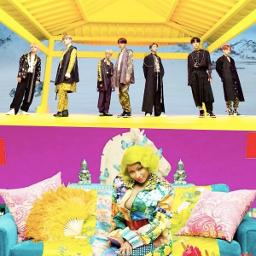

Tony Montana. SUGA ft. JIMIN. No mencioné esta colaboración porque es catalogada como subunidad entre 2 miembros del grupo
Versión acústica de EIGHT cantada por IU.
BTS grabando el MV oficial de su colaboración con Steve Aoki

BTS ganando un premio por la colaboración con Halsey
BTS presentando Boy With Luv junto a Halsey en los iHeartRadio Awards
Portada del cover "We don't talk anymore" por Jimin y Jungkook
Jungkook y Charlie Puth presentando "We don't talk anymore" en los MGA 2018

¡bye, bye!
ʕ•́ᴥ•̀ʔʕ•́ᴥ•̀ʔ ¡Las Mejores 7 colaboraciones de BTS! ʕ•́ᴥ•̀ʔʕ•́ᴥ•̀ʔ
Esta lista está completamente basada en mi gusto personal, y tampoco se trata de desmeritar a otras canciones, es sólo una lista que hizo una fan algo obsesionada jaja. Mis opiniones en esta lista son subjetivas, aunque en algunos casos me basé en la aceptación y popularidad de ciertas colaboraciones :3.
ʕ•́ᴥ•̀ʔ Winter Flower Ft. Younha ʕ•́ᴥ•̀ʔ
"Winter Flower" es técnicamente la canción de la cantante coreana Younha, la voz y las letras de RM le dan al ARMY una pista de hacia dónde se dirige BTS en esta nueva era de Map of Soul 7, ya que los chicos del ARMY se enteraron por primera vez de la nueva canción el 29 de diciembre cuando Younha compartió la lista de canciones de su álbum Unstable Mindset, en Instagram. Claramente, "Winter Flower" es específicamente para los fanáticos de RM y Younha. Es una canción deslumbrante sobre perseverancia, estar en tu propia línea de tiempo, no dejar que el mundo te derrote y permitirte florecer a pesar de los obstáculos, hay que destacar que RM incluso grita plantas que solo florecen a fines del invierno hasta la primavera.
ʕ•́ᴥ•̀ʔ Eight ft. IU ʕ•́ᴥ•̀ʔ
La letra de "Eight" habla sobre no poder olvidar aquello que nos hizo feliz alguna vez, refugiarnos en las memorias de algo o alguien que alguna vez nos hizo felices, pero que irrevocablemente terminó sin que pudiéramos hacer nada para evitarlo. IU canta sobre sentirse joven y pasar los días viviendo de recuerdos, pues al despertar todo es como si fuera una pesadilla al no poder olvidar. Sin duda, ambos lograron combinar la voz y la profundidad de los sentimientos en este single. Suga siempre se ha caracterizado por tener pensamientos profundos que expresa a través de la música, que aunque sean tristes, te ayudan a sanar.
ʕ•́ᴥ•̀ʔ Who ft. Lauv ʕ•́ᴥ•̀ʔ
En una reciente entrevista con ET Canada, Lauv habló sobre el lanzamiento de su nuevo disco 'How I'm Feeling' y cómo fue su experiencia al trabajar junto a BTS en el pasado. El cantante reveló que, debido a las vidas tan ocupadas que todos tenían, no pudieron reunirse personalmente para ponerse de acuerdo en el asunto de 'Make it Right'. BTS ha tenido su agenda llena debido a todas las actividades y promociones que han realizado con motivo de su comeback y, por su parte, Lauv también ha estado muy ocupado preparando todo para el lanzamiento de su disco, por lo que el proceso de creación de su nueva canción fue el mismo.
ʕ•́ᴥ•̀ʔ Seoul Town Road ft. Lil Nas X ʕ•́ᴥ•̀ʔ
'Seoul Town Road' es una canción un poco más corta que la original y el título ahora hace referencia al país de origen del idol. El verso principal de este remix está totalmente a cargo de RM, quien mostró una faceta distinta de su voz. sta noticia ha tomado por sorpresa a los fans de ambos cantantes, sin embargo, muchos ya han mostrado su amor por este nuevo lanzamiento y ahora se ha convertido en tendencia mundial. La única diferencia que presenta este tema con respecto al original y al remix con el padre de Miley Cyrus es el de la inclusión de la voz del artista de K-Pop, quien además se anima a rapear en uno de sus fragmentos.
ʕ•́ᴥ•̀ʔ IDOL ft. Nicki Minaj ʕ•́ᴥ•̀ʔ

Un día antes del lanzamiento de «Idol», luego de la publicación del teaser, rumores acerca de una colaboración entre BTS y Nicki Minaj se dispersaron cuando la aplicación Shazam identificó al teaser como «Idol by BTS (feat. Nicki Minaj)». El 24 de agosto de 2018, dos horas antes de la publicación del álbum, Big Hit confirmó que una versión alternativa de «Idol» con Nicki Minaj se incluiría como un bonus track en la edición digital de Love Yourself: Answer. El sencillo debutó en el décimo primer puesto de Billboard Hot 100 y las dos versiones combinadas vendieron 43,000 descargas en su primer día de lanzamiento en los Estados Unidos. El 9 de noviembre, «Idol» recibió una certificación de oro por parte de la RIAA
ʕ•́ᴥ•̀ʔ Mic Drop ft. Steve Aoki ʕ•́ᴥ•̀ʔ

«Mic Drop» es una canción grabada por la boy band surcoreana BTS, lanzada el 18 de septiembre de 2017 por Big Hit Entertainment como cara B para su quinto mini-álbum Love Yourself: Her. La versión remix de «MIC Drop» fue la primera canción de un grupo Coreano en alcanzar el puesto número uno en la lista de canciones de iTunes en Estados Unidos. El sencillo debutó en la posición número 28 de la lista Billboard Hot 100, convirtiéndose en el primer Top 40 del grupo en el país. El 3 de febrero de 2018, el rapero Desiigner anunció que «MIC Drop» (Remix) obtuvo la certificación de oro en los Estados Unidos, haciendo a BTS el primer grupo Coreano en tener una canción certificada por la Recording Industry Association of America (RIAA)
ʕ•́ᴥ•̀ʔ Boy With Luv ft. Halsey ʕ•́ᴥ•̀ʔ
«Boy with Luv» es una canción grabada por la boy band surcoreana BTS, en colaboración con la cantante estadounidense Halsey. Es tremendo arte que fue apreciado como se debe :3. Fue lanzada digitalmente el 12 de abril de 2019 como el sencillo principal del sexto EP del grupo, Map of the Soul: Persona. El primer tráiler de la canción fue publicado por Big Hit Entertainment el 7 de abril de 2019 en su canal oficial de YouTube, en tanto que el segundo adelanto fue lanzado tres días más tarde. El vídeo musical oficial fue publicado en YouTube el 12 de abril a las 18:00 KST, logrando superar el récord del vídeo más visto de YouTube en 24 horas tras su publicación, al alcanzar 74.6 millones de visitas.